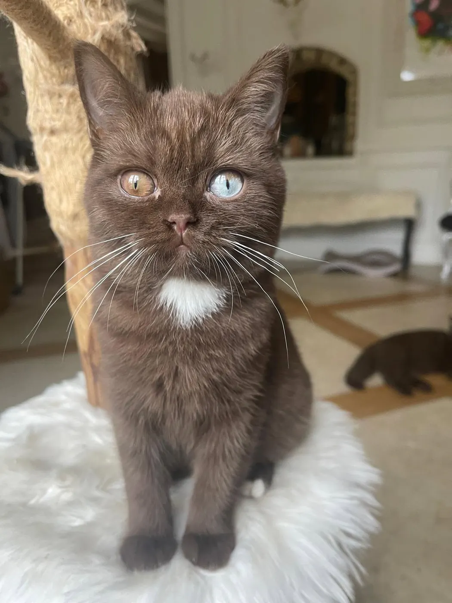
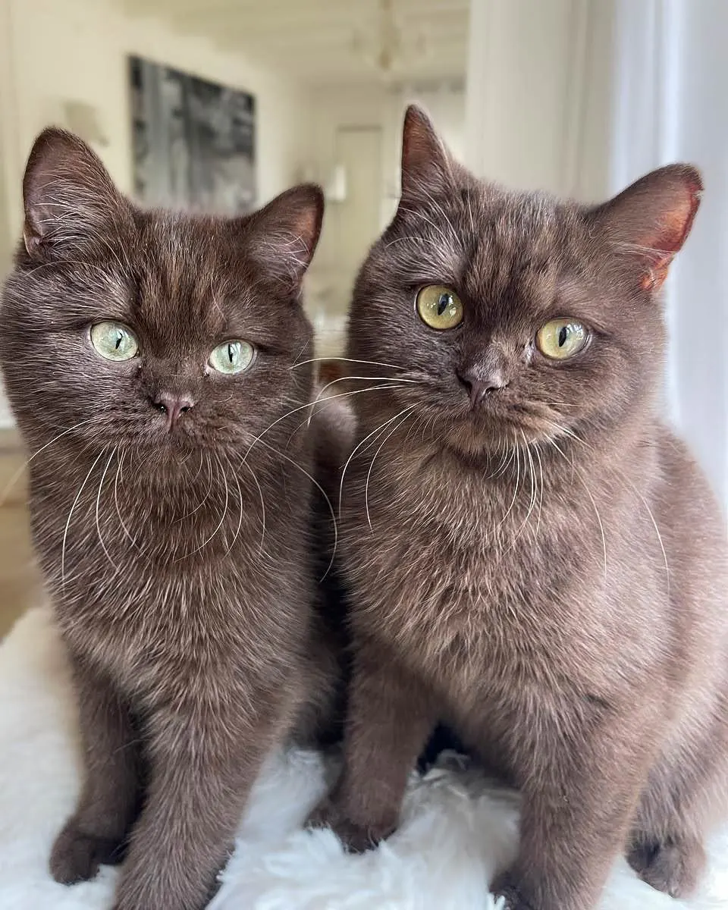
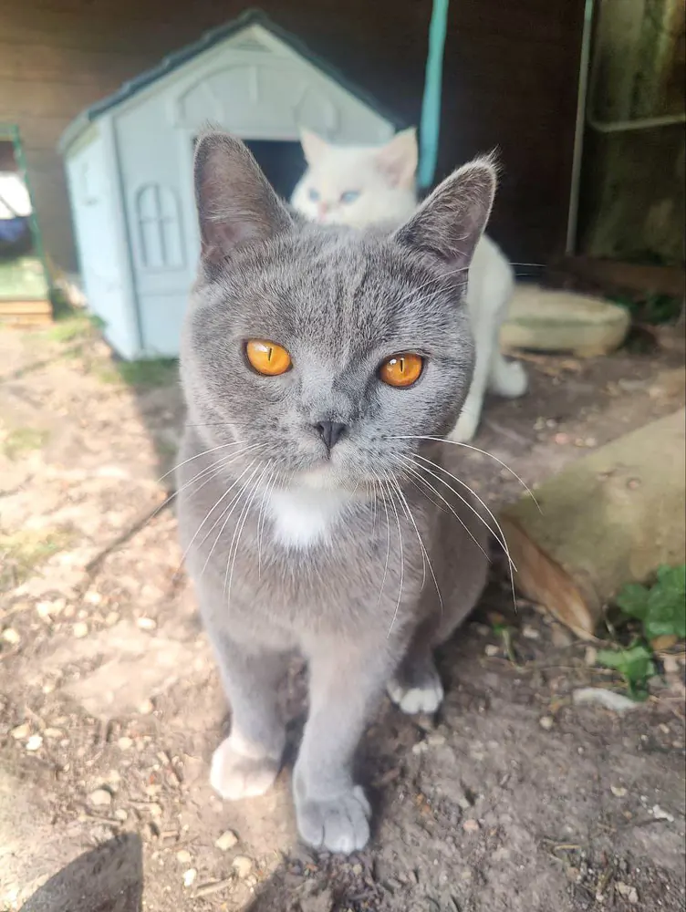
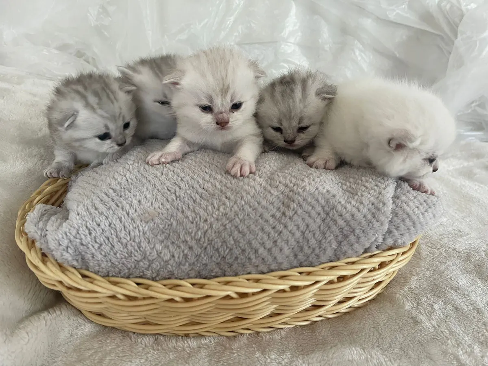
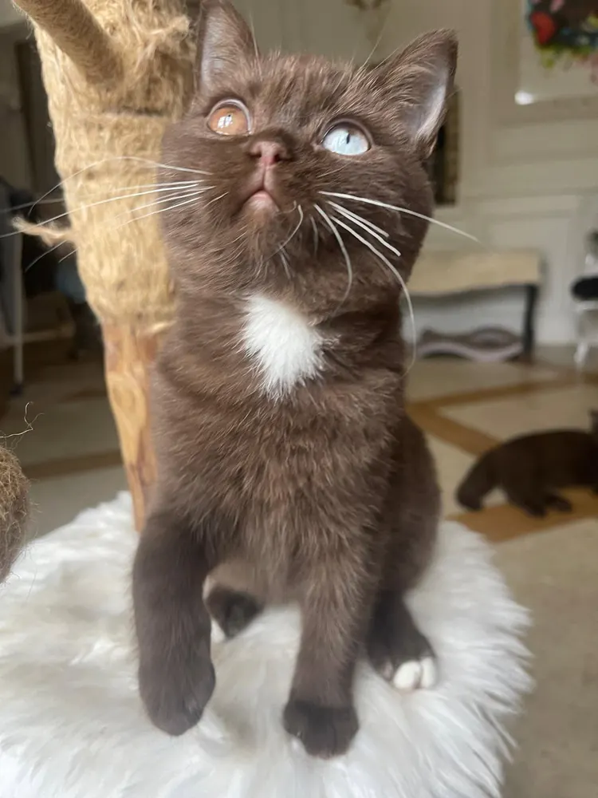
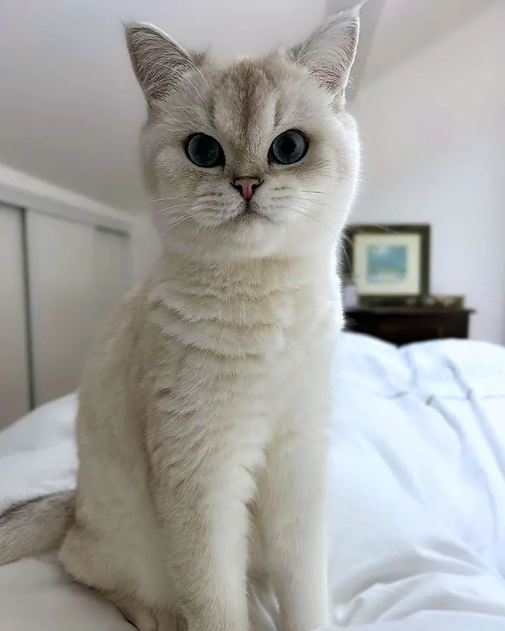
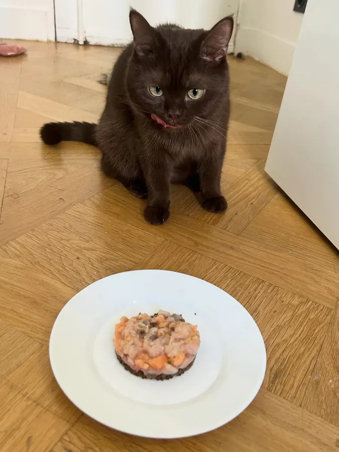
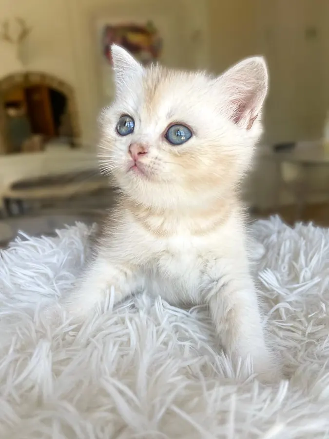
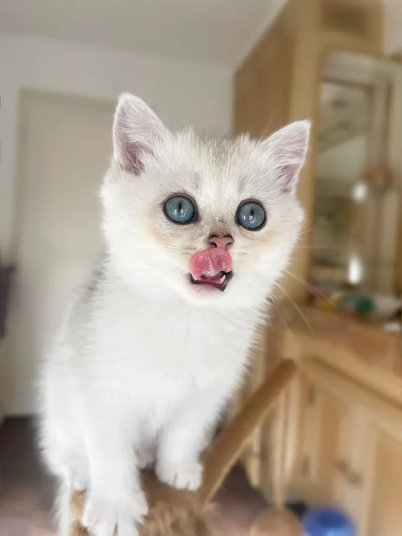

Élevage familial à Othis, en Seine-et-Marne
Chatterie British Kingdom
élevés à la maison, avec tendresse
British Shorthair et British Longhair inscrits au LOOF. Nos chatons naissent et grandissent chez nous, au milieu de la vie de famille, et rejoignent la vôtre vers douze semaines.

Chatterie familialeOthis, Seine-et-Marne
Nos engagements
-
Élevés à la maison
Nos chatons naissent et grandissent en famille : ils connaissent déjà la vie d'une maison le jour du départ.
-
Inscrits au LOOF
Certificat LOOF, puce électronique, premières vaccinations et carnet de santé complet.
-
Suivis après l'adoption
Un suivi et des conseils bien après le départ : une question, un doute, nous restons disponibles.
-
Jusqu'à vous
Remise à Othis, à la gare de Roissy ou de Saint-Mard, livraison en France, en Suisse et en Belgique.
Nos chatons
Les portées du moment
Chargement des portées…


Disponibilités au 23 septembre 2026.

Bounty
5 semaines · Shorthair

Braise
5 semaines · Shorthair

Bulle
7 semaines · Shorthair

Babka
5 semaines · Shorthair

Bagheera
5 semaines · Shorthair

Byron
7 semaines · Shorthair

Berlingot
5 semaines · Shorthair

Bergamote
5 semaines · Shorthair

La chatterie
à Othis, en Seine-et-Marne
Bienvenue chez nous
Nous sommes une chatterie familiale installée à Othis, en Seine-et-Marne, à vingt minutes de l'aéroport Paris-Charles de Gaulle. Nos British Shorthair et Longhair, au caractère doux et affectueux, sont inscrits au LOOF et choyés en famille.
Le British est un compagnon tout en rondeur, paisible et affectueux. Son pelage est somptueux, et sa personnalité en fait un partenaire idéal pour une vie de famille.
Toute la famille British Kingdom
- On échange par téléphone ou par mail, sans engagement.
- Vous venez les voir, sur rendez-vous, chez nous.
- Il vous rejoint vers douze semaines, avec son certificat LOOF et son carnet de santé.

Nos mâles Le British Shorthair est un compagnon tout en rondeur, paisible et affectueux. Découvrir nos mâles
Nos chatons Dès son plus jeune âge, le British incarne une douceur et une affection enveloppantes. Voir les chatons
Nos femelles Avec son tempérament équilibré et paisible, le British Shorthair est le compagnon parfait. Découvrir nos femellesIls sont nés chez nous
Des nouvelles de nos anciens bébés
Nos chatons grandissent, et leurs familles nous donnent de leurs nouvelles. Rien ne nous fait plus plaisir.
-

AstonNé chez nous en septembre 2024 sous le nom de Vulcain. Sa famille nous envoie de ses nouvelles chaque année.
-

AragogSon premier anniversaire, fêté dans sa famille avec un gâteau fait maison.
-

ArlequinDevenu Snow dans sa famille, il est passé sur TF1 en juin 2026.
-

AkyoNé ici, il est revenu passer quelques jours à la maison un an plus tard.
Livre d'or
Ils nous ont fait confiance
En images
La vie à la chatterie
Nos chats et nos chatons au quotidien. Touchez une photo pour l'agrandir, puis zoomez.
Bien s'informer
Conseils et actualités
Nos articles pour bien préparer l'arrivée de votre futur compagnon.

Guide complet sur l’alimentation du chat
Pâtée, croquettes, protéines, phosphore, BARF, légumes… Il est parfois difficile de savoir ce qui est réellement adapté au chat. Dans ce nouvel article, nous faisons le point sur ses besoins de carnivore strict, les limites des croquettes, l’intérêt de l’alimentation humide et les précautions à prendre avec le cru. Un guide complet pour mieux comprendre les étiquettes et faire des choix plus éclairés pour la santé de son chat.

Préparer l’arrivée d’un chaton
L’arrivée d’un chaton est un moment rempli de bonheur, mais aussi un grand bouleversement pour lui. Sécurisation de la maison, alimentation, première nuit, adaptation et rencontre avec les autres animaux : découvrez tous nos conseils pour préparer son arrivée et l’aider à se sentir rapidement chez lui.
Une question, un projet d'adoption ?
Écrivez-nous ou appelez-nous : nous serons ravis de faire connaissance et de vous parler de nos chatons.
Visites sur rendez-vous. Nous ne répondons pas aux appels masqués.